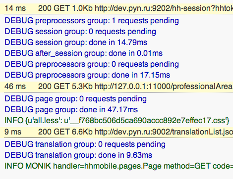
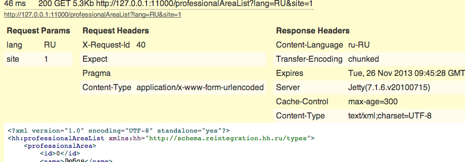
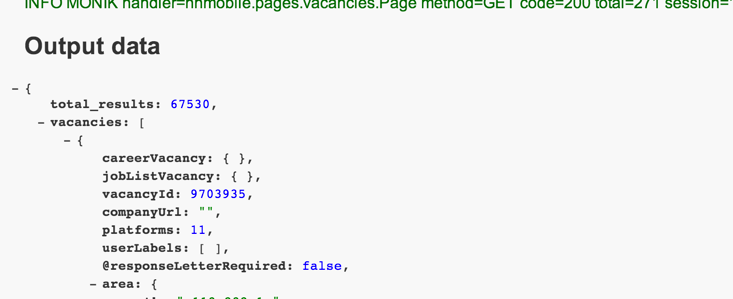

Tortik
a micro framework atop of Tornado
Tortik provides an ability to enchance your tornado web app to the next level.
Preprocessors
Provides a group of asynchronous handlers before main handler starts to work.
def session(handler, callback):
def _cb():
# json/xml parsed automatically and put into handler.responses[<request name>].data
handler.session = handler.responses['session'].data
callback()
handler.fetch_requests(
handler.make_request( # creates HTTPRequest
name='session', # request name
method='GET',
full_url=options.session_url,
headers=headers,
data=data, # data is a dict of parameters to pass to backend
),
callback=_cb,
stage='session' # something about stages goes later
)
def Page(tortik.page.RequestHandler):
preprocessors = [
session,
pagedata
]
def get(self): # all get/post/.. methods are asynchronous by default
# self.session is available now
self.complete() # use it instead of self.finish to apply postprocessors
Stages
All the request handling could be divided into parts: fetching session, do some user related stuff (request backends for data or post smth.), render a page. This parts are called stages in Tortik. Stages provide a better way to find perfomance issues or bottlenecks in your application.
Stage name could be passed as a parameter to fetch_requests method (default is page):
handler.fetch_requests(
...
callback=_cb,
stage='session'
)
or could be done manually:
handler.log.stage_started('render')
# do some hard render stuff
handler.log.stage_complete('render')
After request handle completed a debug note would be printed:
MONIK handler=hhmobile.pages.Page method=GET code=200 total=93 session=13.98 page=47.14 render=21.77 translation=7.30
which means that request done with hhmobile.pages.Page and took total 93ms with stages: session, page, render and translation
Request handler
All the standart Tornado method handlers (get, post, ...) are @asynchronous by default and you don't need to put this decorator every time.
The output data could be prepared by two ways:
- with self.add method
- as an argument to self.complete
def Page(tortik.page.RequestHandler):
self.add('main_data', 'Hello, World!')
self.complete({'some_data': 'Hello, World!'})
The difference is that in the second option your data passes directly to the postprocessors (more on them later) or to the self.finish method if there is no postprocessors in your handler.
In the first option your data is available in self.get_data method and could be processed later.
Postprocessors
Postprocessors is a set of handlers on your output data which run after complete method called.
def template(handler, data, callback): # data is an argument passed to self.complete method
out = template_engine.render(handler.template_name,
data=handler.get_data(), # dict of our self.add calls {'main_data': 'Hello, World!'}
...)
callback(handler, out)
def Page(tortik.page.RequestHandler):
postprocessors = [
template
]
def get(self):
# do some handler stuff
self.add('main_data', 'Hello, World!')
self.complete()
The result of template_engine.render would be transfered to the client.
Debug and logging
Tortik provides a standart method for logging with self.log object.
But the most powerfull feature is a debug page there you can see your page processing:

Information about every request to the backend:

And handler data (result dict of the self.add calls):

You should pass a ?debug argument to the page and page processing would be displayed.